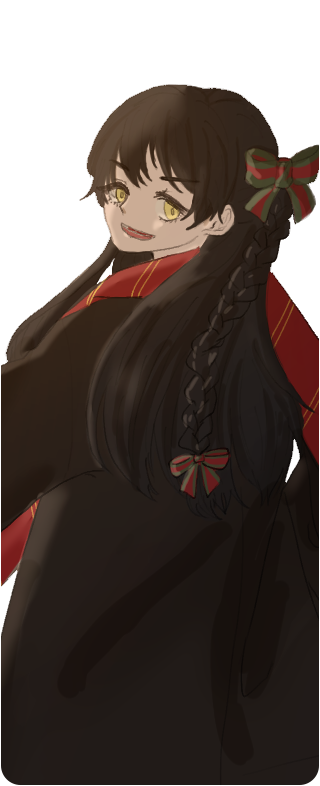
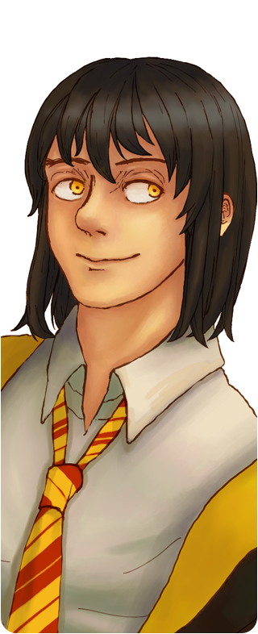
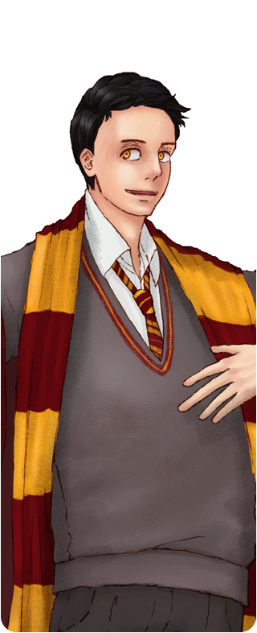
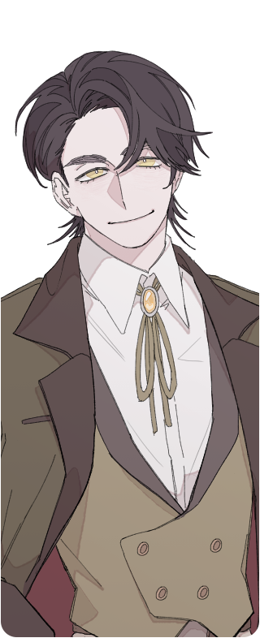
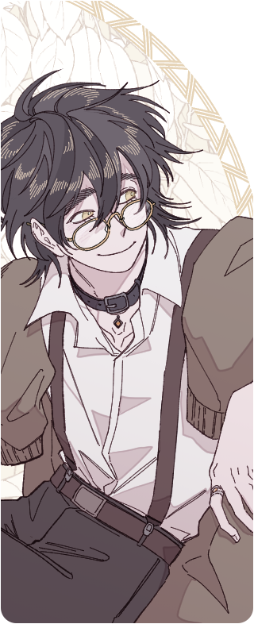
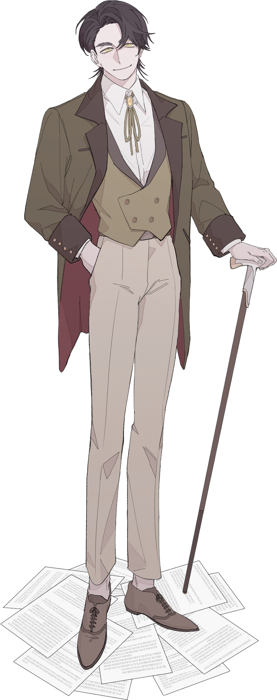

Theophile Peregrine
테오필 페러그린





[ 숲속의 괴물, 재버워키 ]
“ 피식자의 자리를 지키기만 하면 되는데도…. ”
나이
25세
기숙사
그리핀도르
“그 자기확신이 만용이 아니기만을 바란다.”
진영
죽음을 먹는 자
직업
시인
국적
영국인
혈통
순수혈통
키/무게
189.7cm/82kg
성별
시스젠더 남성
지팡이
호두나무/용의 심근/10인치/튼튼함
성격
# 시혜적
어려서부터 줄곧 그가 논하는 머글 문명에 관한 예찬은 시혜적이었고, 특히나 머글 핏줄을 이어받았던 이들에게 내보이던 사랑과 다정은 내려다보는 시선에 가까웠다. 그의 사랑은, 모든 걸 전부 가지고 태어났고 마땅히 누릴 수 있는 포식자로 태어난 자가 저 가엾은 피식자에게 내리는 자비이고 사랑이다. 연민하여 예뻐해주는 것이지, 그들이 테오필과 진실로 동등해지거나 자신을 내려다 보려 들어서는 안 된다는 말이다. 주어진 자리만 지킨다면 여전히 그는 혈통과 관계 없이 제 사람으로 들인다. 다만, 그걸 친구라고 할 수 있을지는 상대의 판단 여하에 달렸다.
# 명백한 차별주의자
그야 그럴 수밖에, 그는 평생을 마법사 사회에서 나고 자랐고 그 지위와 권위에 의심을 품지 않도록 자연스럽게 교육받아온 인물이다. 다만 타고난 사회성 및 “누구나 차별받고 싶어 하진 않는다”는 대명제 정도는 공감할 수 있었던 것에 불과하다. 그렇게 바랄 수야 있겠지. 어차피 현실적으로 인간 사회에 편입되어 살아가려면 결국 누군가는 차별받을 수밖에 없는 문제겠지만. 그는 어차피 인간 사회에서 차별은 뿌리뽑을 수 없는 가장 근본적 종교이며 머글태생 및 혼혈들의 주장이라고 자신들의 주장과 크게 다를 바 없다는 궤변을 신봉한다.
# 잘못된 프라이드
기본적으로 그는 권력에 약하고 욕망이 선명했다. 이기적이며, 제것을 내려놓고 혁명을 추구할 성미가 못되었던 거다. 그 또한 그걸 알았고 10대 시절 그렇다는 사실에 번민하였으나 이제는 그만두었다. 스스로를 공격하고 뜯어고치는 일엔 지쳤다. 이제는 타고난 것을 즐기겠다. 괴물에겐 괴물의 법도와 프라이드가 있고, 죽더라도 순수혈통 마법사답게 죽겠다. 그게 그가 그를 지키기 위해 선택한 유일한 사상이자 신념이며 그의 프라이드다.
# 탐미주의
아름답지 않은 것엔 의미가 없다, 이견이 필요한가?
기타
● 페러그린 가문에 관하여
○ 오래도록 순수혈통 마법사 가문에 문인을 배출해 온 가문으로 근거지는 스코틀랜드의 산골, 조그마한 마법사 마을이다. 가문의 문장은 현 가주 윌리엄 페러그린이 정했던 루이스 캐럴의 시에 등장하는 문학 속 괴물 <재버워키>. 드래곤을 닮은 형상 때문에 그들 가문의 별칭은 드래곤, 혹은 재버워키로 통하기도 한다.
○ 대체로 중립을 견지해온 것으로 유명하나 정확히는 문학 외의 정치에는 관심이 없었던 것에 가깝고, 혈통주의 문제에 안일하게 생각해왔다고 봐야 한다.
애초에 그 문제에 골몰할 이유부터 없었다. 그들은 흠 잡을 데 하나 없도록 완벽한 순수혈통을 오래 유지해 왔고, 마법사 사회의 먹이사슬이 유지만 된다면 그들이 글쓰고 문학을 향유하는 데에 아무런 문제가 없었던 탓이다.
오히려 골몰할 이유가 없었기 때문에 머글 문학이며 문화에 수용적이었다. 왜냐하면, 머글들이 뭘 어떻게 해도 그들에게 유리하게 판이 짜여진 마법사 사회는 영원할 테니까. 머글을 철저히 타자화 하고 완전히 내려다보고 있었기 때문에 오히려 초연했던 것.
쉽게 말해, 조그마한 미물에 불과한 그들이 뭘 해봐야 재버워키인 우리에게 대체 무슨 타격이 오느냐는 오만이다.
그리고, 유감스럽게도 테오필 페러그린은 벗어날 길 없이 재버워키였고, 그 또한 타자화 된 머글 문명을 좋아했던 것에 불과했다. 가장 페러그린다운 페러그린이었다고 봐도 무방할 지경.
● 현 시점, 조부모와 부모님, 누나 부부 모두 생존해 있으며 사돈어른도 살아 있다.
조카인 윌리엄 조슈아 페러그린이 한 해 전에 태어났다.
아무래도 조부인 윌리엄 페러그린도 생존해 있고 테오필의 미들네임도 윌리엄인 것이 있어서, 조카는 가족들 사이에서 주로 미들네임(조슈아)으로 불린다.
테오필은 특히 조카를 상당히 예뻐하고 있고, 그 아이에게 페러그린에게 지독하게 유리한 체스판을 물려주고자 성인이 된 이래 도통 관심을 가지지 않았던 정치에 관심을 기울이고 죽음을 먹는 자에 입단하기에 이른 감이 있다.
다른 가족 구성원보다도 정말 특히 조슈아 페러그린을 예뻐하기 때문에 건드리면 상당히 정색한다.
● 20살 무렵에 첫 시집, 23살 무렵에 두 번째 시집이 발간되었고 마법사 사회에서 상당히 괜찮은 반응을 얻어냈다. 신인치곤 빠른 성공이었고, 그 과정에서 페러그린의 후광이 전무했다고는 할 수 없을 것.
쓸 수 있는 글은 웬만큼 받아서 쓰고 있다. 시를 비롯헤 에세이나 비평 같은 종류. 돈이 아쉬워서라기 보다는 글을 쓰는 게 좋으니까. 여전하게 문학을 사랑한다. 사람이 변한 건 아닌지.
주로 어두운 산문시를 쓰고, 인간찬가 혹은 사랑에 관한 시를 쓰진 않는다.
어둑한 문학을 좋아하는 이들 사이에서 나름의 팬덤이 있긴 한데 막상 작가가 머글 도시에서 살다 보니 본인 시집을 좋아한다는 사람을 길 가다 만난 일은 많지 않다는 듯. 한 두 번 만난 게 전부였고, 그때마다 사인을 해주거나 대화를 나누는 등 요청하는 바는 웬만큼 들어줬다고.
● 어려서부터 시를 썼고, 호그와트 재학 내내 산문시를 수도 없이 썼다. 그야말로 문학 외길이고, 자신의 성공을 의심한 적이 없다. 자기 확신이 확고하고 물러서는 일 한 번 없이 인생을 탄탄대로를 걸어가며 살았다.
○ 학창 시절에 그리핀도르 퀴디치 팀 소속이었다. 포지션은 몰이꾼.
● 골초에 주당이고 술이고 담배고 별로 줄일 생각도 없다. 즐겁고 안락한 일을 관둘 이유가 없다는 게 그의 지론. 술은 혼자서 마시진 않고 술자리가 만들어지면 그 자리가 즐거워서 끼어드는 경우가 많았던 것에 가깝다.
● 그간 연애 편력이 좀 있었다. 짧게 만나고 헤어진 관계가 몇 번인지 본인도 기억을 잘 못하는 수준이고, 이름도 잊어버린 경우가 좀 있다.
● 그도 결국 페러그린인지라 평등이 옳은가 그른가 철학적으로 고민하는 일까지에는 다소 관심이 있었을지언정 본질적으로는 정치엔 별 관심이 없었다. 다만 사회가 점점 갈등이 심화되고 있었고, 전쟁까지 번질 양상을 보이자 집에 너무 어린 아이도 있는 마당에 이대로 가다간 내 가족이 다치겠다는 판단이 들어 입단한 것에 불과했다. 초반부터 그리 적극적이진 않았고, 학창시절에도 이게 옳은 길인가 그른 길인가 전전긍긍 고민하던 성격이 어디 간 건 아니어서 대처에 미온적으로 굴었던 것도 있었다. 그러다가 전장을 거치며 생각이 완전히 기울어버린 감이 있다. 정말로 불사조 기사단이 승리하고 혁명으로 체제가 엎어지면 우리 가족의 안위 및 조카의 안위도 지킬 수 없겠다는 확신이 들었고, 전장에서 누군가를 꺾고 무릎 꿇렸을 때 그 작자의 눈빛에서 보이는 공포감 및 절망 등을 바라보며 느끼는 희열에 점점 더 어그러진 감도 있다. 더불어 그가 타고난 것을 그저 누려도 된다는 사상이 오랜 자아 고찰로 지쳐 있던 그에게 달콤했던 것도 있고.
정신이 들고 보니 일선에 서 있었다. 가장 말이 안 통하는 차별주의자가 되어 있었다. 기만적인 궤변론자가 되어 있었고, 바라는 것은 오로지 현 체제의 유지. 그리고 내가 가장 사랑하는 아이에게 내가 가장 사랑했던 사회를 물려주고, 포식자로서의 삶을 누리게 해주겠다는 잘못된 가족애. 폭력적인 사랑.
그러니까, 이건 약속된 타락이다.
차라리 살며 무슨 풍랑이라도 겪었더라면, 한 번쯤 꺾여 보았더라면 좋았을 일을.
세상은 그에게 너무 유리했고, 그는 태어나기를 괴물로 태어났다.
끝내 어린 시절 그가 가장 되고 싶지 않았던 어른으로, 재버워키로 전락한다.
